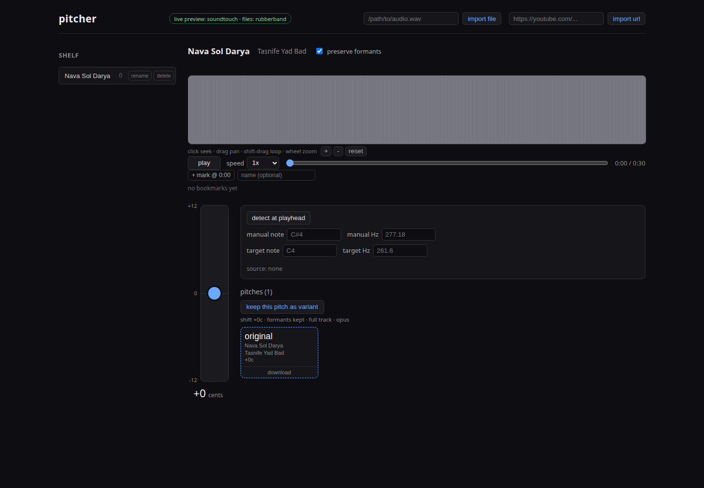

The pitcher web UI
A browser interface with a zoomable waveform, a vertical pitch fader, a single-note tuner, and a shelf of pitch variants. It is the same engine as the CLI, with a friendlier surface for trying pitches by ear.
This one runs on your computer, not on a website.
The web UI is a front end to a small Rust server that uses ffmpeg, the Rubber
Band Library, aubio, and yt-dlp, and stores your audio in a local SQLite
database. That cannot run in a static host like GitHub Pages, which only
serves files and cannot run the server, the command line tools, or Python.
So there is no hosted demo here. Instead, run it locally with the commands
below and your audio never leaves your machine.

What it does
- Import local files, or fetch from YouTube and SoundCloud with yt-dlp
- Vertical pitch fader with live preview and fine or coarse drag
- Zoom, pan, and loop on the waveform
- Detect the note at the playhead, or type a note or frequency
- Keep pitch variants and switch between them without moving the playhead
- Export as Opus, FLAC, MP3, Ogg, or M4A
- Playback speed from 0.5x to 2x
- Runs on your machine; nothing is uploaded
Run it locally
Requires Rust, Node.js, and the system audio tools.
git clone https://github.com/k1monfared/pitcher
cd pitcher
# system dependencies (Debian/Ubuntu)
sudo apt install rubberband-cli librubberband-dev aubio-tools libaubio-dev ffmpeg yt-dlp
# build the frontend if needed, build the server, pick a free port,
# and open the browser
./scripts/pitcher-web.shThe launcher starts on port 7373, scans upward if it is busy, and prints the local and LAN URLs. To do it by hand:
cd web && npm install && npm run build && cd ..
cargo build --release -p pitcher-server
PITCHER_WEB=web/dist PITCHER_DATA=data ./target/release/pitcher-serverRequirements
| Component | Package |
|---|---|
| Pitch shifting | rubberband-cli, librubberband-dev |
| Tuner | aubio-tools, libaubio-dev |
| Audio decode and encode | ffmpeg |
| Online import | yt-dlp |
| Build | Rust, Node.js |
All free and open source. The desktop and web front ends are GPL-3.0-or-later.